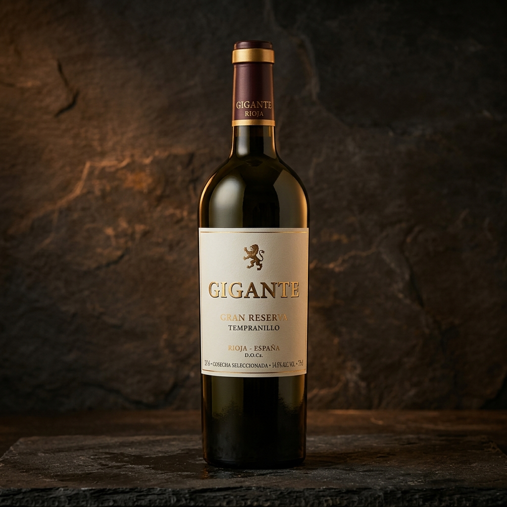

Directorio & Guía de Experiencias · Campo de Criptana
Tierra de
Gigantes.
Explora la guía de Campo de Criptana. Encuentra de forma rápida y sencilla los horarios oficiales, direcciones en mapa y números de contacto de las bodegas, restaurantes y monumentos históricos más importantes.
Directorio Local
Lugares Imprescindibles
 Monumento
Monumento
Sierra de los Molinos
Los icónicos molinos de viento del siglo XVI que inspiraron las hazañas de Don Quijote. Tres de ellos (Burleta, Infante y Sardinero) conservan su maquinaria original.
 Restaurante
Restaurante
Restaurante Cueva La Martina
Una experiencia gastronómica inigualable. Cocina tradicional manchega servida dentro de una auténtica cueva del siglo XVI adaptada al confort moderno.
 Restaurante
Restaurante
Restaurante Las Musas
Ubicado a los pies de la Sierra de los Molinos. Combina recetas manchegas con toques de autor, una cuidada bodega y una terraza espectacular con vistas al atardecer.
 Bodega
Bodega
Bodegas Castiblanque
Bodega familiar del siglo XIX ubicada en el casco urbano. Ofrece visitas guiadas a sus cuevas históricas y naves de crianza, con catas comentadas de sus vinos premium.

BodegaBodegas Símbolo
Cooperativa local galardonada nacional e internacionalmente por sus vinos Airén y Tempranillo. Sus modernas instalaciones ofrecen talleres y visitas guiadas con reserva previa.
Organiza tu Ruta
Calcula tu Día en Criptana
Selecciona las visitas y comidas que deseas programar en tu ruta, y generaremos un itinerario completo que podrás enviar directamente a tu WhatsApp para tenerlo a mano durante tu viaje.